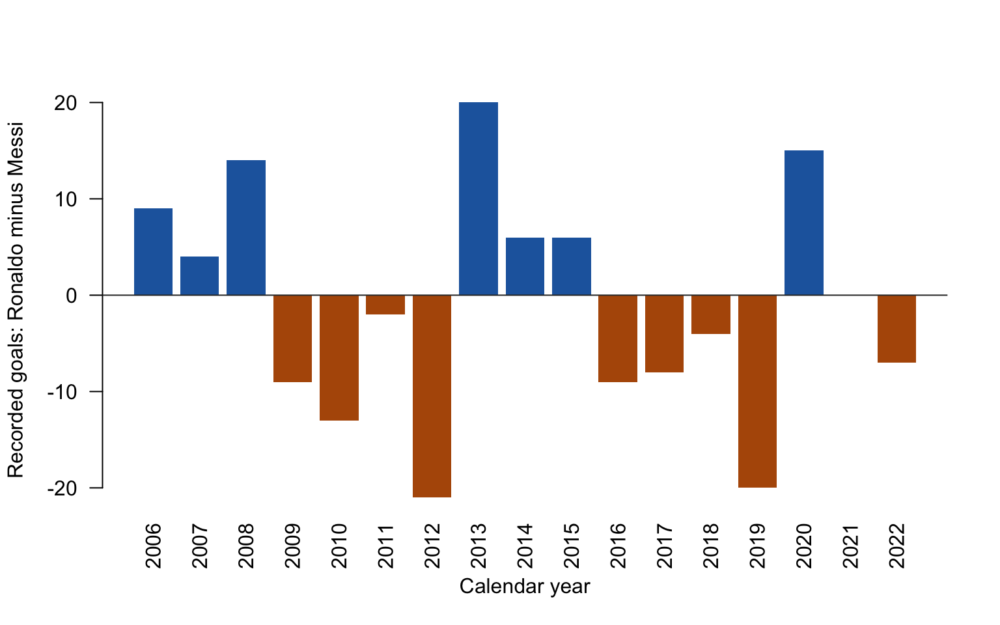

Which player scored more recorded club goals in each calendar year from 2006 to 2022? This post uses Python to prepare yearly counts, passes them to R to calculate and plot differences, then passes R’s result back to Python for a summary.
Data: Lionel Messi vs Cristiano Ronaldo | Club Goals, compiled by Azmine Toushik Wasi on Kaggle. The locally included CSV is licensed under ODbL 1.0 for the database and DbCL 1.0 for its contents. Any adapted database published with this analysis is also available under ODbL 1.0.
The records end in March 2023. I exclude 2023 because it is only a partial year, and start in 2006, the first full calendar year after both players appear in the file. This is a shared observation window, not a guarantee that the source contains every goal.
Connect R to the project’s Python
The knitr engine runs the R chunks and uses reticulate for the Python chunks. The path is relative to this post, so it also works in a fresh clone. Setting the interpreter before Python starts ensures the post uses the same .venv as the Python-only analysis.
python: /Users/jzq/DSCI521/MasterJJJJ.github.io-mds-website/.venv/bin/python
libpython: /Users/jzq/.local/share/uv/python/cpython-3.14.7-macos-aarch64-none/lib/libpython3.14.dylib
pythonhome: /Users/jzq/DSCI521/MasterJJJJ.github.io-mds-website/.venv:/Users/jzq/DSCI521/MasterJJJJ.github.io-mds-website/.venv
virtualenv: /Users/jzq/DSCI521/MasterJJJJ.github.io-mds-website/.venv/bin/activate_this.py
version: 3.14.7 (main, Aug 14 2026, 15:24:10) [Clang 22.1.3 ]
numpy: /Users/jzq/DSCI521/MasterJJJJ.github.io-mds-website/.venv/lib/python3.14/site-packages/numpy
numpy_version: 2.5.3
NOTE: Python version was forced by RETICULATE_PYTHON
Python: prepare annual goal counts
Each row is one goal. I count the rows for each player and year, then explicitly include every year in the chosen window. A zero means no recorded goal in this file, rather than proof of no goals in reality.
# Ordinary Python lists make the object easy to transfer to R.annual_counts = {"Year": annual.index.tolist(),"Ronaldo": annual["Cristiano Ronaldo"].tolist(),"Messi": annual["Lionel Messi"].tolist(),}
R: use the Python object
py$annual_counts accesses the dictionary created in the previous Python chunk. R calculates Ronaldo’s count minus Messi’s count for each year. Positive values mean Ronaldo has more recorded goals; negative values mean Messi has more.
bar_colors <-ifelse(yearly$Difference >0, "#2166ac",ifelse(yearly$Difference <0, "#b35806", "#777777"))barplot(yearly$Difference, names.arg = yearly$Year,col = bar_colors, border =NA, las =2,xlab ="Calendar year", ylab ="Recorded goals: Ronaldo minus Messi")abline(h =0, col ="#333333")

Figure 1: Difference in recorded club goals by calendar year, 2006–2022. Blue bars favour Ronaldo, orange bars favour Messi, and zero indicates a tie.
Python: use R’s results
The r object exposes R variables to Python. This final calculation checks that R’s three categories account for every year in Python’s table, demonstrating that both languages participate in the same computation.
ronaldo_ahead =int(r.ronaldo_years)messi_ahead =int(r.messi_years)ties =int(r.tied_years)assert ronaldo_ahead + messi_ahead + ties ==len(annual)print(f"Ronaldo led in {ronaldo_ahead} years; Messi led in {messi_ahead}; ties: {ties}.")
Ronaldo led in 7 years; Messi led in 9; ties: 1.
What this comparison tells us
Within this window, Ronaldo leads in 7 calendar years and Messi in 9, with a tie in 1 of those years. The largest absolute annual gap is 21 recorded goals. Counting years gives each year equal weight, regardless of how large the gap was, so it answers a different question from comparing total goals across the whole period.
These counts do not adjust for appearances, minutes, opponents, or competitions. Calendar years also cross club seasons. They describe the historical records provided here and cannot establish which player was more efficient or better overall.